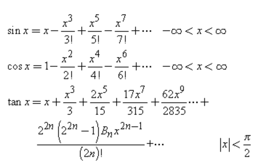
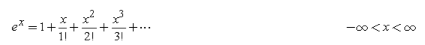

Ref : https://www.efunda.com/math/taylor_series/trig.cfm


https://www.efunda.com/math/special_numbers/special_numbers.cfm#bernoulli
https://www.efunda.com/math/taylor_series/exponential.cfm

Bn is Bernoulli number.
The Bernoulli Numbers  are defined by a special case of the following Bernoulli polynomials:
are defined by a special case of the following Bernoulli polynomials:
When  and
and  , the above expression becomes:
, the above expression becomes:
where:
Exponential function

exp(ix) = 1 + i.x - x^2/2! -x^3/3! + ... = cosx + i.sinx
cosx = 1-x^2/2!+...
sinx = x -x^3/3! +...
tanx = (x-x^3/6+...)/(1-x^2/2+...)
= (x-x^3/6+...)*(1+x^2/2+...)
= x+x^3/2-x^3/6+...
= x+x^3/3+...